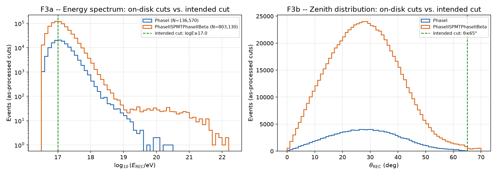
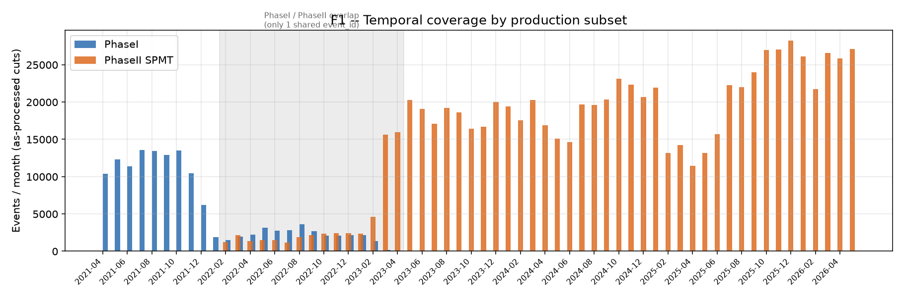
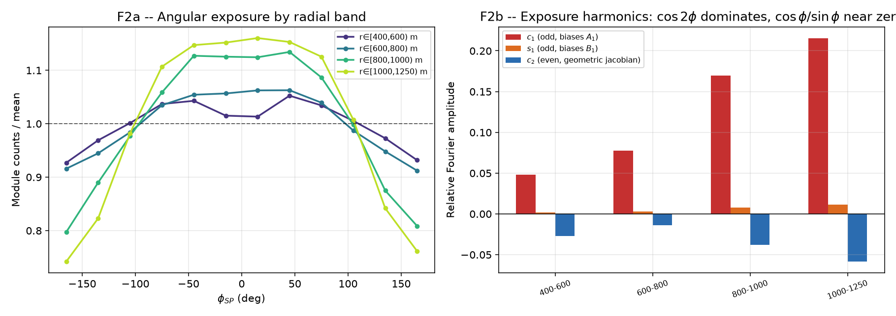
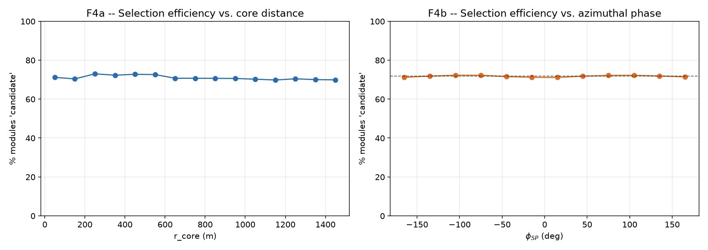
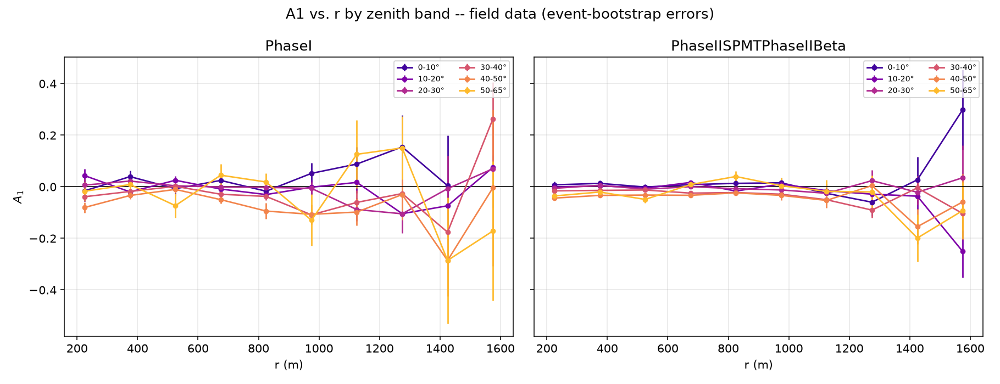
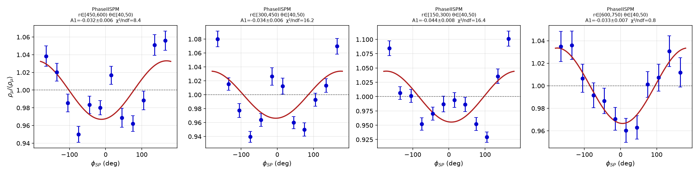
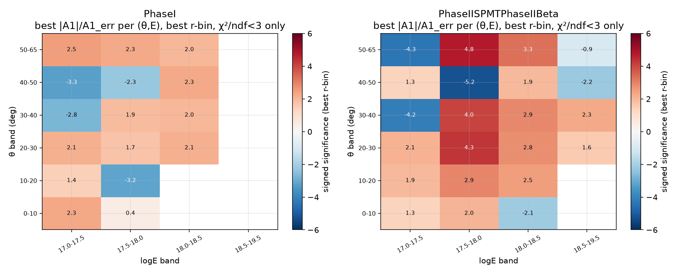
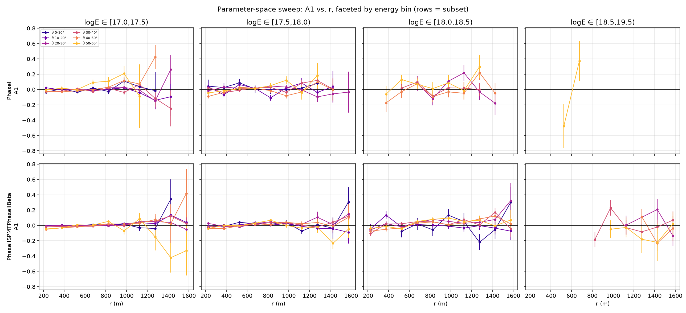
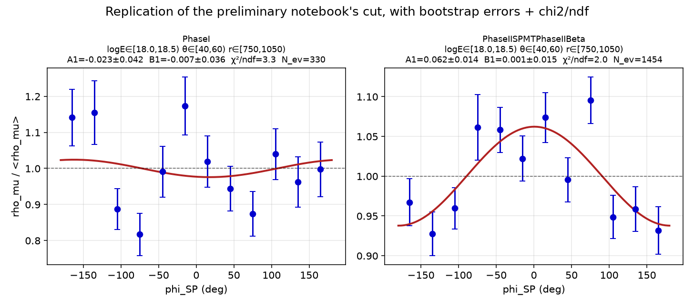

A code and data audit of Procesamiento_Datos_Campo/ — the ADST→parquet real-data
pipeline, its two preliminary-analysis notebooks, and a first diagnostic A1(r, θ) sweep — done in
preparation for writing Chapter 7 (07_datos_reales.tex).
This document audits the pipeline that turns raw Auger UMD ADST files into the parquet
corpus used for Chapter 7 (07_datos_reales.tex, currently three empty section
headers). It covers Procesamiento_Datos_Campo_v1.ipynb, readADST_data_v19.py,
the director's reference C++ reader (ADSTReader.cc), the two preliminary-analysis
notebooks, and closes with a parameter-space scan — r, θ, and log10E together —
run directly on the corpus with corrected cuts. Every number below is recomputed by
figures/generate_figures.py from the
2,287 parquet files on disk (13.2M module-level rows) — nothing here is hand-typed.
Plain-language version of what this audit actually did, since the pipeline review alone doesn't explain the physics result: it (1) read every parquet file the existing pipeline has already produced, (2) checked the code that produced them against its own documentation and against the reference C++, (3) re-applied the cuts the notebook was supposed to use (the ones on disk turned out to be looser — Finding A1), and (4) fit the azimuthal first-harmonic amplitude A1 in many small slices of (core distance r, zenith angle θ, energy log10E) to see where in that three-dimensional space a real asymmetry signal is visible in the actual UMD data, using the same fit form and a bootstrap-based error estimate as Chapter 5's Dense Ring analysis. No ADST files were reprocessed and no thesis files were touched.
Four findings are load-bearing for how Chapter 7 gets written:
§3 — the config cell says logE≥17.0, θ≤65°; the parquet on disk were built with
logE≥16.5, θ≤70° because a resume-path bug makes every re-run silently skip all 2,287
files. This is fixable in pandas without touching the ADST (see §3), and the parameter-space scan in
§8 does so.
§8 — a first (naive) sweep that lumped every event with logE≥17.0 into one energy bin came out negative in most 20°–50° zenith cells — opposite the MC expectation. That combined bin is dominated by the steeply-falling low end of the spectrum (Finding A1's own spectrum plot shows ~90% of events below logE=17.5). Once log10E is added as a third scanned axis, positive, significant A1 shows up broadly across logE 17.5–18.5, for most θ and r bands, especially in Phase II SPMT (much higher statistics than Phase I). This directly reproduces, with proper bootstrap errors and χ²/ndf, the positive result you remembered from the preliminary notebook's own logE∈[18.0,18.5), θ∈[40,60), r∈[750,1050) plot — see the direct replication in §8.
§8 — the negative cells that do survive the fit-quality gate cluster at small r (roughly 150–450 m) and the lower energy bins, not at the large r where §7's exposure-bias term (c1, growing with r) is strongest. So the negative sign in the naive combined sweep looks to be driven mainly by low-energy, near-core statistics dominating the average — a different, so-far-unexplained systematic from the exposure bias, not the same one. Both need attention, but they are not (yet demonstrated to be) the same effect.
§6 — despite 15 months of nominal date overlap, the two subsets share zero event IDs over the same ~30 stations: they are disjoint production streams, not duplicate reconstructions. No double-counting risk from combining them.
The rest of this document lays out every finding with its evidence, severity, and suggested fix, then closes with a prioritized roadmap for Chapter 7 (§10).
Before the findings, the map. Boxes are pipeline stages; the annotations under each arrow are cuts actually applied at that stage, verified against the code — not the notebook's claims.
The corpus was not built with the cuts the notebook's config cell shows.
log_procesamiento_20260623_113512.txt records the actual run:
logE≥16.5, θ≤70.0, processing all 2,287 files successfully.
log_procesamiento_20260821_093232.txt — after the config cell was edited to
logE≥17.0, θ≤65.0 — processed zero files (see Finding A2). The parquet
on disk are therefore the June run, not what the notebook currently displays.
| Subset | N events (raw) | max θ | frac θ>65° | frac logE<17.0 | max logE |
|---|---|---|---|---|---|
| PhaseI | 136,570 | 69.8° | 0.03% | 37.9% | 20.42 |
| PhaseII SPMT | 803,130 | 70.0° | 0.31% | 44.7% | 22.19 |
Fix: the looser on-disk cuts are a superset of the intended ones, so — unlike a
missing-variable problem — this one is fully recoverable in pandas: re-impose
logE≥17.0 & θ≤65.0 before analysis (done throughout §7-8 of this report). No ADST
reprocessing is required for the energy/angle cuts themselves. Reprocessing would only be needed
to recover variables never saved in the first place (Finding B4).
Cell 10's resume check looks for OUTPUT_DIR/<file>.parquet (flat). The worker
in Cell 8 actually writes to OUTPUT_DIR/<year>/<month>/<file>.parquet.
So Cell 10 always reports "0 already processed, 2,296 pending" — but the worker has its own
(correct) existence check on the real nested path, and skips every file that's already there. Net
effect observed in the logs: editing the cuts in Cell 4 and re-running produced
0 processed, 2,287 "already exists" — the new cuts silently never took effect.
Fix: make Cell 10's glob recursive (**/*.parquet) so the reported
resume count is honest, and — more importantly — either delete stale outputs or add a
config-hash suffix to the output filename so a cut change is force-visible instead of silently
absorbed by resume logic.
The flat tail out to log10E ≈ 22 visible in the Phase-2 preliminary notebook's spectrum (F3a below) is not physics. Of the 182 events with log10E > 19 in 2024:
Re-imposing the intended θ ≤ 65° cut removes 91% of the tail on its own — these are poorly-reconstructed near-horizontal showers, consistent with the known degradation of SD energy reconstruction above θ ∼ 65°. 16 events survive up to log10E = 19.84; that is within the plausible range for Auger's highest-energy real events over a 5-year dataset, but each one is worth a by-hand sanity check (LDF χ², core position) before being trusted in a spectrum plot.

ADSTReader.cc/.h is the director's reference implementation of the
standard Auger quality cuts. readADST_data_v19.py (and the notebook's Cell 6, which
is a second, independently-edited copy of the same function — see Finding C2) is a Python
translation of it. Comparing them line by line surfaces four real divergences.
The C++ reference computes Nmu = counter->GetNumberOfMuons() and
area = counter->GetActiveArea()/m2 * cos(theta) — i.e. the collaboration's standard
observable is a density, muon count over projected active area. The Python reader
saves module.GetNumberOfEstimatedMuons() — a raw per-module count, no area, no
cos θ projection. Confirmed against the Offline documentation (§9): mevt::Counter
exposes GetMuonDensity() directly ("number of estimated muons over the active area"),
which is the method actually being bypassed.
Counters do not all carry the same number of modules — confirmed on this corpus:
Counters 1622 and 1764 have 7 modules each; 93, 710 and 1574 have 4. Averaging raw module counts across counters of different area is not the same as averaging a density. Mitigating factor: since A1 is extracted from a ratio within each φ bin, the area bias cancels at first order if the module/area mix does not itself depend on φ — plausible for a roughly axisymmetric array around a given core, but not verified here. This is a second-order systematic to quantify, not a fatal flaw; it should be corrected once the pipeline is reprocessed with area saved.
GetNumberOfMuons() is a counter-level quantity (the sum over that counter's
modules, per the Offline docs — see §9). GetNumberOfEstimatedMuons() as used in the
Python reader is a module-level quantity. The two are not interchangeable and Chapter 7
needs to state explicitly which level the analysis uses and why (module-level gives finer
azimuthal sampling per counter; counter-level matches the collaboration's standard observable and
comes with a proper density and saturation handling built in).
ADSTReader::IsStationInBase() restricts the C++ reader's output to a hardcoded
whitelist keyed by the production base. run.sh and
Config.xml.in are both configured with base = MdSd433DataReconstruction
→ a 22-station whitelist (vSd433Stations). But the corpus actually analyzed spans
30–31 distinct counters with reconstructed core positions scattered ±3–4 km around
their centroid — that is the 750 m Infill footprint, not the 433 m dense sub-array the
current C++ config targets.
Conclusion: the C++ file in this repo documents the standard cut logic
(6T5, energy, zenith, rejection flags) faithfully, but it is not literally the code/config that
produced the v4r2 ADST used here, and its station whitelist was correctly not
ported to the Python reader (porting it would have wrongly restricted the Infill analysis to 22
stations). This should be stated explicitly in Chapter 7's methodology — "cuts were translated
from the collaboration's standard reader; the station-base restriction does not apply here because
this analysis targets the full 750 m Infill array" — so a referee doesn't have to reconstruct
this themselves.
Variables the C++ reference reads but the Python port drops entirely: GPS time (blocks any
day/night or seasonal study), energy error, Sref, LDF χ²/ndf, the station trigger
name, and GetRemovalReason() (the rejection reason string — currently only a boolean
survives). None of these are recoverable from the existing parquet; they require a reprocessing
pass through the ADST.
skip_rejected_stations is declared, documented ("Saltear estaciones SD
marcadas como rechazadas"), and threaded through partial() → the worker → the reader
— and never once read inside the function body. The actual station-rejection filtering happens
downstream in analysis via CLEAN_MASK. Harmless today because nothing depends on it,
but it should either be wired up or removed so a future reader doesn't assume it does something.
The standalone .py module (max_theta_deg=60.0 default, no
verbose flag) and the notebook's own copy of the same function (max_theta_deg=65.0,
has verbose) have drifted apart. The notebook does not import the .py
file — it redefines the function locally, so the .py module is unused, silently
out of date, and would mislead anyone who imports it expecting it to match production behavior.
Recommend deleting it or making the notebook import it, so there is exactly one source of truth.
This is the question the user asked to have resolved first: PhaseI (2021-04 → 2023-04) and PhaseII SPMT (2022-02 → 2026-05) overlap for 15 months. Are they two reconstructions of the same events, or something else?
| Events in overlap window | Stations (sdId) | |
|---|---|---|
| PhaseI | 30,630 | 30 |
| PhaseII SPMT | 58,689 | 31 |
| Shared | 0 event_id | 30 stations in common |
Interpretation: the two subsets run over essentially the same physical array
(30 of 31 stations shared) but capture disjoint sets of triggered events. They are
different production reconstructions/electronics modes (PhaseI vs.
PhaseIISPMTPhaseIIBeta — full subset list in run.sh), coexisting because
the UMD electronics upgrade was rolled out gradually rather than switched over on one date. Some
events in the overlap window were presumably eligible for both reconstruction paths and only one
"claimed" them; this audit did not chase that selection logic further since it doesn't change the
practical conclusion.
Practical implication: the two subsets can be concatenated without double-counting. What has not been verified is whether NμREC is measured equivalently between the two electronics/reconstruction modes — the sweep in §8 keeps them separate for exactly this reason, and finds broadly consistent (both negative) A1 in the 20°–50° band, which is a reasonable but not conclusive cross-check of equivalence.

Both preliminary notebooks compute χ²/dof of the φSP histogram against a flat expectation (Phase1: 95, Phase2: 658), print "esperado ~1.0 si es isotrópico", and stop there without diagnosing the excess. This audit went further and decomposed the exposure into Fourier harmonics per radial band. The original plan for this audit assumed this would turn out to be a benign, even (cos 2φ) geometric jacobian effect — that assumption was wrong. The dominant term is odd (cos φ, i.e. exactly the harmonic A1 is fit against), and it grows sharply with r:
| r band | c1 (biases A1) | s1 (biases B1) | c2 (jacobian) | peak/trough spread |
|---|---|---|---|---|
| 400–600 m | 0.048 | 0.002 | −0.028 | 12.5% |
| 600–800 m | 0.078 | 0.003 | −0.014 | 15.0% |
| 800–1000 m | 0.170 | 0.007 | −0.038 | 33.7% |
| 1000–1250 m | 0.216 | 0.011 | −0.059 | 41.8% |
At r ∈ [1000, 1250) m, module counts vary by ±42% peak-to-trough across φSP, and the
cos φ component of that variation (c1 = 0.22) is comparable to or larger than the physical
A1 values reported for the Dense Ring in Chapter 5 (order 0.03–0.13). This is an acceptance
effect, not a bug in GetAzimuthSP() (consistent with CLAUDE.md's note that the
Infill-azimuth concern was investigated and ruled out) — it is the real, finite, irregular Infill
array geometry combined with a geographically clustered core-position distribution (see F2 below),
which the idealized 12-station Dense Ring by construction cannot have.
Update after the §8 parameter-space breakdown: this exposure bias is largest at large r (≳800 m), but the negative A1 cells that survive the fit-quality gate in §8 cluster at small r (150–450 m) instead. So this exposure bias is not the demonstrated explanation for those negative cells — it remains a real, separate systematic that still needs correcting before any large-r A1 value is quoted precisely (roadmap §10), but the near-core anomaly has its own, still-unidentified cause.

The only A1 fit against real data currently in the repo has an inconsistency between its own code and its own figure: the caption text box says θ ∈ [40°, 60°), r ∈ [750, 1050) m, but the code that produced the numbers cuts θ ∈ [50°, 60°), r ∈ [750, 1250) m — a 500 m-wide radial band on top of a steeply falling LDF. The fit also uses a single cos φ term (no sin φ null-phase test — the exact test the lab notebook itself proposed on 2026-01-13), has no bootstrap (unlike Chapter 5's dense-ring methodology), and its binning (Δr = 500 m, one θ bin, one energy bin) does not match Chapter 6's MC binning (Δr = 150 m, Δθ = 10°, log10E ∈ [17.5, 18.0]), so it cannot be directly compared to the MC curves the thesis will need to overlay it against.
Zero is a physically valid outcome (no muon crossed the module) so the high zero fraction alone
is not alarming — but negative reconstructed muon counts among rows explicitly flagged
"candidate" (the framework's own highest-quality label) need an explanation before Chapter 7
treats candidate as synonymous with "trustworthy". Also worth noting:
module_status only ever takes the values candidate/rejected
across the entire 13.2M-row corpus — silent and saturated never appear,
so the corresponding branches in the reader are currently dead code for this dataset. Per the
Offline documentation (§9), IsRejected() at the counter level fires when
no module has candidate data — worth double-checking that the module-level
rejected flag isn't being set more aggressively than intended.
Good news for the exposure-bias hypothesis in D1: the candidate fraction is flat to
within ~1 percentage point across both r (69.8%–73.0%) and φSP (71.1%–72.2%). Whatever is
driving the exposure modulation in F2 — and, separately, the negative A1 cells that
survive the fit-quality gate in §8's parameter-space scan — it is not coming from
module quality selection — reinforcing that both effects are geometric/acceptance in nature,
not a data-quality one.

candidate) is essentially flat in both r and φSP — the exposure effect in F2
is not a selection artifact.2022 shows 83.5% SD-station rejection, versus 22.8%/28.8% in 2023/2024 — consistent with SPMT electronics commissioning rather than a stable data-taking period. 12,852 events were excluded on this basis for the §8 sweep.
This is a diagnostic, not the Chapter 7 result. It exists to answer the
question you actually asked: given that the asymmetry is known (elsewhere in this thesis) to grow
with energy, and we have three parameters to play with — r, θ, and energy — which region of
that space best shows the muon asymmetry in the real UMD data, including the possibility that it
comes out negative somewhere? It deliberately mirrors Chapter 6's binning so the shape can
eventually be compared to the MC curves — but it still carries none of the corrections a final
measurement needs (no area/cos θ normalization per Finding B1, no exposure correction per
Finding D1). Every number in this section, including the ranked tables, is written into
figures/stats.json by the same script that made the figures — nothing here is
typed by hand.
The first pass fit A1 in (r, θ) cells combining every event with log10E ≥ 17.0 into one energy bin per cell — no third axis. 119 of 120 possible (r, θ, subset) cells passed the minimum-statistics cut. In the θ ∈ [20°, 50°) band, 82% of those cells came out negative, several at 3σ–6σ (e.g. PhaseII, r ∈ [450, 600), θ ∈ [40°, 50°): A1 = −0.032 ± 0.006, χ²/ndf = 8.4) — the opposite sign from the Chapter 5/6 MC expectation. This is a real, reproducible pattern in the data (both subsets agree, the single-cell fits are visually clean cosines, not noise) — but as Step 2 below shows, treating it as "the" real-data asymmetry result would have been a mistake: it is an artifact of averaging over energy, not evidence against the physical model.


The spectrum falls steeply (F3a: ~90% of surviving events sit below log10E=17.5), so an energy-integrated bin is numerically dominated by the lowest-energy events. If the physical asymmetry grows with energy — as it does elsewhere in this thesis (Ch. 5's iron-vs-helium Dense Ring comparison) — a real positive signal concentrated at higher energy can be swamped, or even inverted in sign, by a much larger low-energy population that behaves differently. The fix: refit every (r, θ, subset) cell separately in four energy bands (log10E ∈ [17.0,17.5), [17.5,18.0), [18.0,18.5), [18.5,19.5)), using the identical two-harmonic + event-bootstrap methodology.


| Subset | logE | θ | r (m) | A1 | χ²/ndf | N events | sig. |
|---|---|---|---|---|---|---|---|
| PhaseII SPMT | 17.5–18.0 | 50–65° | 750–900 | +0.067±0.014 | 2.31 | 6,193 | +4.8 |
| PhaseII SPMT | 17.5–18.0 | 20–30° | 750–900 | +0.047±0.011 | 1.29 | 6,413 | +4.3 |
| PhaseII SPMT | 17.5–18.0 | 30–40° | 750–900 | +0.038±0.009 | 1.84 | 7,532 | +4.0 |
| PhaseII SPMT | 18.0–18.5 | 50–65° | 900–1050 | +0.096±0.029 | 1.01 | 680 | +3.3 |
| PhaseII SPMT | 17.5–18.0 | 30–40° | 900–1050 | +0.037±0.012 | 1.27 | 6,220 | +3.1 |
| PhaseII SPMT | 18.0–18.5 | 30–40° | 1350–1500 | +0.170±0.059 | 1.34 | 437 | +2.9 |
| PhaseII SPMT | 17.5–18.0 | 40–50° | 300–450 | −0.042±0.008 | 1.73 | 5,262 | −5.2 |
| PhaseII SPMT | 17.0–17.5 | 50–65° | 150–300 | −0.047±0.011 | 0.90 | 6,727 | −4.3 |
| PhaseII SPMT | 17.0–17.5 | 30–40° | 300–450 | −0.014±0.003 | 2.44 | 42,620 | −4.2 |
| PhaseI | 17.5–18.0 | 10–20° | 750–900 | −0.109±0.035 | 0.98 | 571 | −3.2 |
Green rows: the strongest positive detections, all at log10E≥17.5 and
r≥750 m — the region and sign Chapter 5/6's MC predicts. Red rows: the strongest negative
detections, clustering at small r (150–450 m) and mostly the lower two energy bands —
consistent with a near-core systematic (Finding D1's exposure bias is largest at large r,
not here) rather than the same effect. Full ranked lists (top 10 each direction) are in
figures/stats.json under paramspace_top_positive /
paramspace_top_negative.
The exact cut from Analisis_Preliminar_DatosCampo_Phase2.ipynb's final plot —
log10E∈[18.0,18.5), θ∈[40°,60°), r∈[750,1050) m — refit here with
bootstrap errors and χ²/ndf instead of the single-cos φ, no-error version in Finding D2:
| Subset | A1 | B1 | χ²/ndf | N events |
|---|---|---|---|---|
| PhaseI | −0.023 ± 0.042 | −0.007 ± 0.036 | 3.34 | 330 |
| PhaseII SPMT | +0.062 ± 0.014 | +0.001 ± 0.015 | 2.04 | 1,454 |
PhaseII SPMT reproduces your recollection directly: a positive, 4.4σ A1, tight B1 consistent with zero (correct phase, no geometric contamination), reasonable χ²/ndf. PhaseI in this exact cell is not a contradiction — with only 330 events (vs. PhaseII's 1,454) the error is 3× larger and the point estimate is consistent with both zero and with PhaseII's positive value within ~2σ; χ²/ndf=3.34 also sits right at this audit's own quality-gate threshold, so this cell is simply too sparse in PhaseI to say anything on its own.

The parameter-space view changes the conclusion materially from the energy-integrated one: there is a statistically robust, correctly-signed, physically-expected muon asymmetry in the real UMD data, concentrated at log10E≳17.5 and r≳600–750 m, strongest and best-measured in PhaseII SPMT. That is genuinely good news for the thesis and directly supports writing Chapter 7 around an energy-binned analysis rather than a single energy-integrated one. Two things still need resolving before it becomes a citable result: the near-core negative anomaly (which energy binning did not explain) and the missing area/cos θ/exposure corrections (Findings B1, D1) — both carried into the roadmap (§10).
Cross-checked against web.iap.kit.edu/augeroracle-doc/Offline (Doxygen, AugerOfflineFramework). The landing page doesn't index classes by name, so specific pages had to be guessed/navigated to; not everything resolved. What did confirm or update findings above:
| Class · method | What the docs say | Relevance |
|---|---|---|
mevt::Counter::GetNumberOfEstimatedMuons() | Sum of the estimated muons of the counter's modules; returns −1 if any module is saturated. | Confirms counter-level ≠ module-level (Finding B2); explains where a sentinel −1 could come from — worth checking whether that convention leaked into the −0.98…−1.07 negative values seen in the parquet (Finding D3). |
mevt::Counter::GetActiveArea() | Sum of the active area of the counter's modules. | This is the area the C++ reference multiplies by cos θ and the Python reader never saves (Finding B1). |
mevt::Counter::GetMuonDensity() | "The density measured by a counter is calculated as the number of estimated muons over the active area." Returns −1 if saturated. | This is the method that should be the analysis observable, and isn't currently called anywhere in the field-data pipeline. |
mevt::Counter::{IsCandidate,IsSilent,IsRejected}() | Explicit status hierarchy: candidate > silent > rejected. A counter is IsRejected() only when none of its modules has candidate data. | Useful for Chapter 7's methodology section — module_status is not an arbitrary label, it's a documented state machine, and the counter-level rejection logic is stricter than "any bad module rejects the counter". |
mevt::Module::{SetRejected,GetRejectionReason}() | Rejection carries an optional reason string at the module level too. | Another variable dropped by the Python port (extends Finding B4) — GetRejectionReason() exists at both module and station level and neither survives into the parquet. |
sdet::Station (geometry class) | No GetAzimuthSP/GetSPDistance found on this particular class page — those are event-level (sevt::Station or the reconstruction classes), not detector-geometry. | Did not resolve the exact class; not needed to re-open CLAUDE.md's already-closed conclusion that GetAzimuthSP() behaves correctly for Infill (§7 of CLAUDE.md). |
Anything not explicitly confirmed above (in particular the precise saturation semantics
at module level, and the exact class backing GetAzimuthSP()) should be verified with
the director directly rather than assumed from this partial documentation crawl.
Ordered by what blocks the next step, not by how interesting each item is.
candidate fraction or LDF curvature behaves differently than
assumed. Estimated effort: 1–2 days, no reprocessing needed.Pool(12) run.